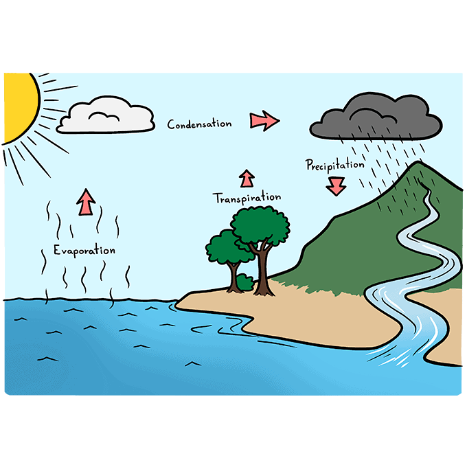

What is the Water Cycle?
The water cycle describes how water evaporates from the surface of the earth, rises into the atmosphere, cools and condenses into rain or snow in clouds, and falls again to the surface as precipitation.
Stages of the Water Cycle
Evaporation
The sun heats up water in rivers, lakes or oceans and turns it into vapor which rises into the air.
Condensation
Water vapor in the air cools and changes back into liquid, forming clouds.
Precipitation
When so much water has condensed that the air cannot hold it anymore, it falls back to earth as rain, snow, sleet or hail.
Collection
Water falls back to earth as precipitation and collects in rivers, lakes and oceans, ready to evaporate again.
Interactive Water Cycle
Click the buttons below to see each stage of the water cycle in action.